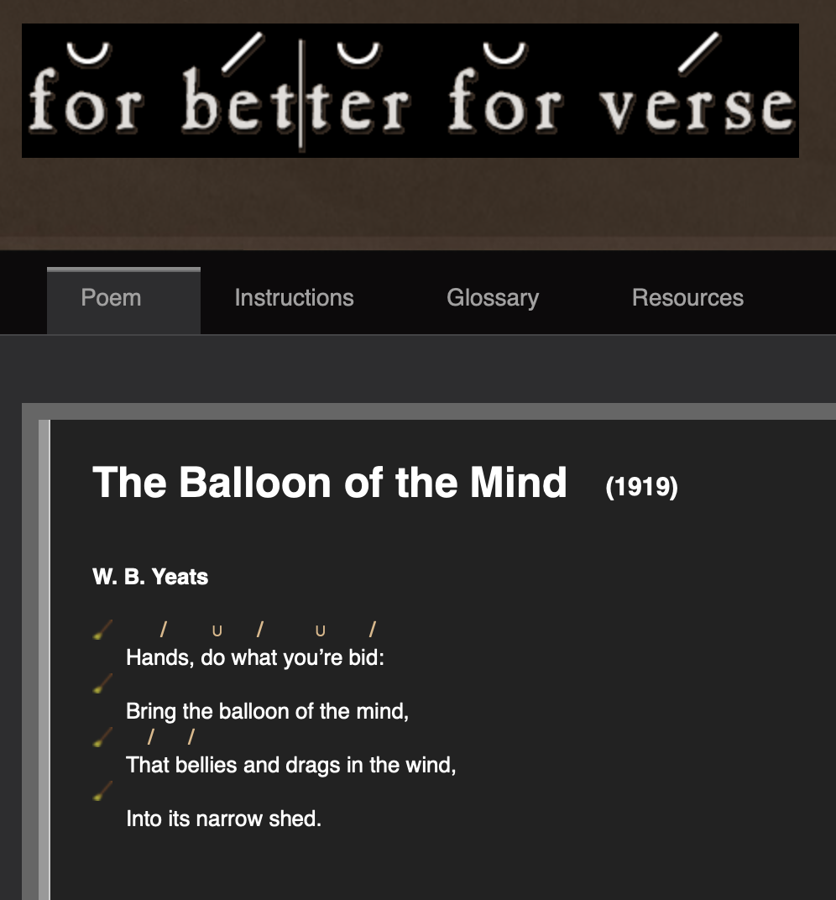

For Better For Verse
In the fall of 2017 I worked as a research assistant for Professor Chip Tucker's project For Better For Verse. The website is an interactive pedagogical tool that aims to teach students how to scan a poem (i.e. correctly apply stresses and slacks). Using Javascript, I added a "broom" feature to the website (seen below), which efficiently clears a user's progress on their scansion.
